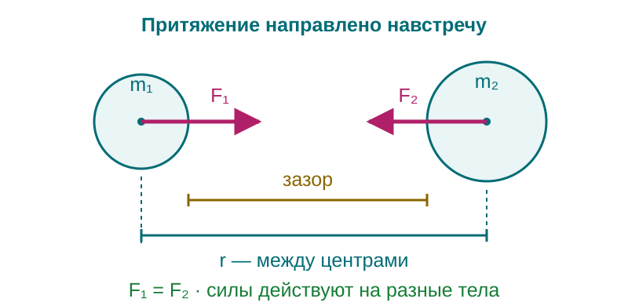
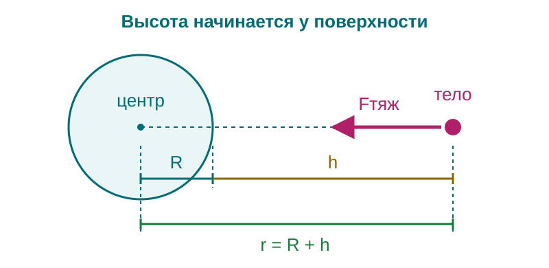

Решение задач по теме «Сила тяжести и закон всемирного тяготения»
Земля притягивает и книгу на столе, и спутник на орбите. Выбор формулы зависит от данных: известно ли ускорение свободного падения в нужной точке или притяжение надо найти по массам и расстоянию.
Какую формулу выбрать
Если известно \(g\), сила тяжести для тела массой \(m\) равна:
Для двух материальных точек или двух неперекрывающихся сферически симметричных тел используйте закон всемирного тяготения:


Планета: высота и расстояние до центра
Снаружи сферически симметричной планеты массой \(M\) и радиусом \(R\):
Высота \(h\) отсчитывается от поверхности; \(g_0\) — ускорение у поверхности, где \(r=R\). Модель не учитывает вращение планеты, атмосферу и притяжение других тел.


Два разобранных примера
Пять задач для самостоятельного решения
У поверхности Земли принимайте \(g=10\ \text{м/с}^2\), если не указано другое. Используйте приведённое выше значение \(G\); шары и планеты считайте сферически симметричными.
1. Книга. Масса книги \(750\ \text{г}\). Найдите силу тяжести и изобразите её направление. Изменится ли эта сила, если неподвижно держать книгу в руке вместо того, чтобы положить на стол?
2. Земля и Луна. У поверхности Земли на прибор действует сила тяжести \(120\ \text{Н}\). Найдите массу прибора и силу тяжести у поверхности Луны, где \(g_{\text{Л}}=1{,}6\ \text{м/с}^2\). Какая из этих величин сохраняется при переносе?
3. Зазор между шарами. Два шара массами по \(100\ \text{кг}\) имеют радиусы по \(20\ \text{см}\). Зазор между поверхностями — \(60\ \text{см}\). Сделайте рисунок, найдите расстояние между центрами и силу притяжения. Сравните модули сил, действующих на первый и второй шар.
4. Изменение взаимодействия. а) Массу каждой из двух материальных точек увеличили вдвое, расстояние между ними — втрое. Найдите отношение новой силы к первоначальной и поясните результат. б) В другом опыте массы не менялись, а сила стала в девять раз меньше. Во сколько раз и в какую сторону изменилось расстояние?
5. Притяжение на орбите. Космонавт массой \(80\ \text{кг}\) находится на высоте \(h=R\) над поверхностью Земли. Примите \(g_0=10\ \text{м/с}^2\). Сделайте рисунок с \(R\), \(h\), \(r\); найдите ускорение свободного падения и силу притяжения Земли. Можно ли считать земное притяжение на этой высоте отсутствующим?
Домашнее задание: §15–16.